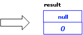
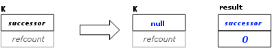
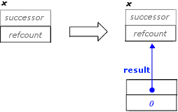
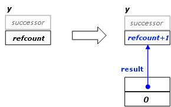

常に特別にオーバーロードされる new 演算子の 1 つを使用してタスク・オブジェクトにメモリーを割り当てます。割り当てメソッドはタスクを構築しません。代わりに、ライブラリーによって提供される new 演算子のオーバーロード・バージョンへの引数として使用できるプロキシー・オブジェクトを返します。
一般的に、割り当てメソッドは割り当てられたタスクが生成される前に呼び出さなければなりません。この規則の例外は allocate_additional_child_of(t) で、タスク t がすでに実行している場合でも呼び出せます。プロキシーの型は実装によって定義されます。唯一の保証は、フレーズ "new(proxy) T(...)" が T 型のタスクを割り当てて構築することです。
216 バイトよりも大きなタスクを割り当てると、より小さなタスクを割り当てる場合よりも大幅に遅くなります。一般に、タスク・オブジェクトは小さな軽いエンティティーにしてください。
これらのメソッドは慣用句的に使用されるため、次の表のメンバーは宣言ではなく慣用句を示しています。引数 this は通常は暗黙的ですが、インスタンス・メソッドとスタティック・メソッドを区別するため、ヘッダー部では明示的に示されています。
| メンバー | 説明 |
|---|---|
| new( task::allocate_root( task_group_context& group ) ) T | 指定されたキャンセルグループで T 型のタスクを割り当てます。下記の図は、状態遷移を要約したものです。 task::allocate_root() の効果
 spawn_root_and_wait メソッドを使用してタスクを実行します。 |
| new( task::allocate_root() ) T | キャンセルグループが現在の最も内側のキャンセルグループであることを除いて、new(task::allocate_root(task_group_context&)) に似ています。 |
| new( x.allocate_continuation() ) T | T 型のタスクを割り当てて構築し、x から新しいタスクに successor を転送します。参照カウントは変更されません。下記の図は、状態遷移を要約したものです。 allocate_continuation() の効果
 |
| new( x.allocate_child() ) T | this をその successor としてタスクを割り当てます。下記の図は、状態遷移を要約したものです。 allocate_child() の効果
 明示的な継続渡しを行う場合、successor を正しく設定するため、サクセサーではなく継続で割り当てメソッドを呼び出します。 タスク数が小さな定数でない場合、プレデセッサーの task_list を最初に構築して、task::spawn の単一呼び出しでプレデセッサーを生成してください。すべてが構築される前にタスクが一部のプレデセッサーを生成する必要がある場合、そのメソッドは refcount をアトミックにインクリメントするため、追加のプレデセッサーが適切にカウントされるように、代わりに task::allocate_additional_child_of(*this) を使用してください。しかし、この処理を使用する場合は、ブロックスタイルのタスクパターンを使用して、refcount が 0 にならないように保護する必要があります。 |
| new(task::allocate_additional_child_of( y )) T | タスクを別のタスク y のプレデセッサーとして割り当てます。タスク y は、すでに実行中か、ほかのプレデセッサーが実行されています。下記の図は、状態遷移を要約したものです。 allocate_additional_child_of(successor) の効果
 y はすでにプレデセッサーを実行しているので、y.refcount のインクリメントは (インクリメントがアトミックではないほかの割り当てメソッドとは異なり) アトミックです。ほかのプレデセッサーを実行しているタスクにプレデセッサーを追加する場合、新しいプレデセッサーが追加される前にサクセサーの refcount が 0 にならないことと、サクセサーの実行をトリガーしないことを保証することはプログラマーの責任です。 |